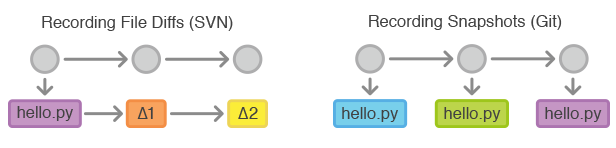
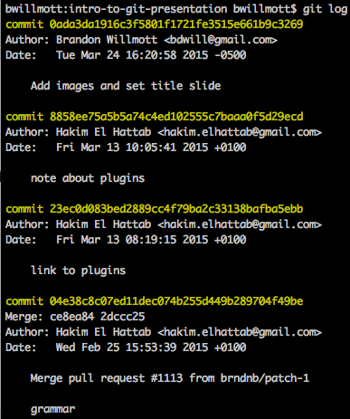
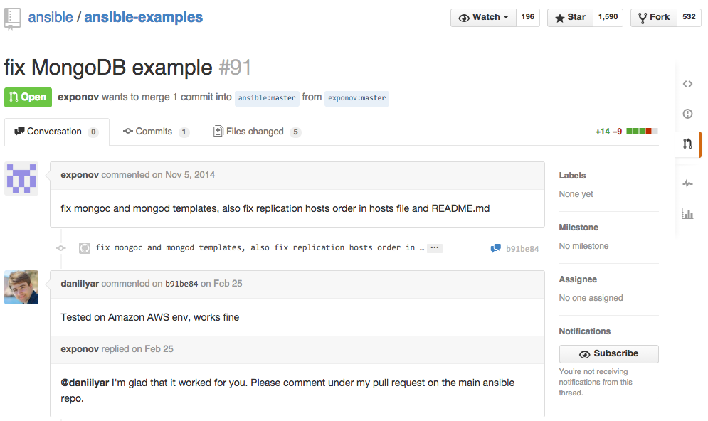
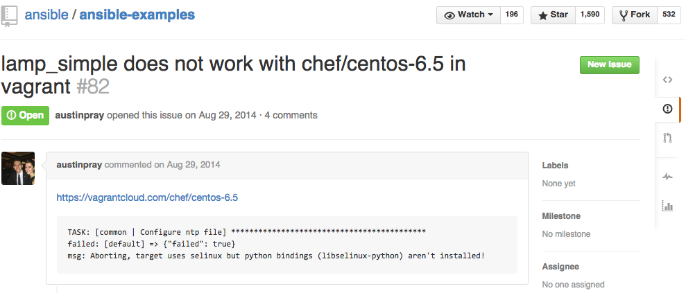
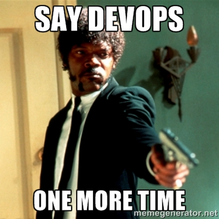

Intro to Git
Distributed Source Code Management and the Rise of Social Coding
Brandon Willmott | Systems Engineer | VMware vExpert
What is git?
Version control system used to manage revisions of files and store changes in snapshots.
What makes git distributed?
Everyone has a local, full copy of the repo including history
What is git used for?
Mostly source code but anything can be put in a git repository: documents, spreadsheets, etc.
I used git while creating this presentation.
Why has popularity of git exploded?
Basic git functions
$ git init
Initialized empty Git repository in /Users/bwillmott/Documents/testapp/.git/$ git add .$ git commit -m "Add slides 3 and 4"$ git remote add origin https://segit01.lab.pernixdata.com/bwillmott/project.git$ git push origin master$ git fetch$ git checkout -b test
Switched to a new branch 'test'Collaboration
Clone/Fork
Pull Request
Issues
Why should we embrace git?
Central repository for scripts/tools used by SE team
Landscape is changing with popularity of configuration management and containers
Getting Started with Git
Install SourceTree (Windows and Mac)

Nice, free GUI for managing repositories with GitHub/GitLab
Also installs git CLI
What's the Difference between GitHub and GitLab?
Functionally the same, same git on the back end. Front end allows ease of collaboration and sharing code.
GitHub is free for public repos
GitLab can be installed locally to have a free, private git repository with all the fixings.
Git More
The Basics of Git and GitHubGit Immersion